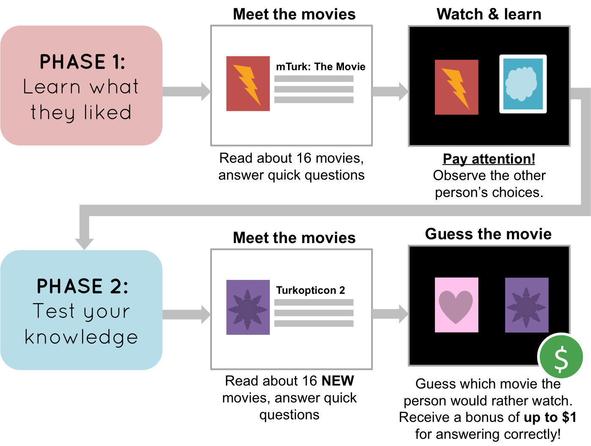

Carefully read the instructions below, and answer the following questions. NOTE: Please answer ALL the questions to the best of your ability. If your answers indicate that you haven’t watched our stimuli or have read the instructions, we will be unable to accept your response. Thank you for contributing to a better understanding of how the mind works!
This HIT is part of a scientific research project conducted by the Social Learning Lab at Stanford and has been approved by the IRB of Stanford University. Your decision to complete this HIT is voluntary. We will only have access to your worker ID and no other information to identify you. The only other information we will have, in addition to your response, is the time at which you completed the survey and the amount of time you spent to complete it. The results of the research may be presented at scientific meetings or published in scientific journals. Clicking on the ‘SUBMIT’ button on the bottom of this page indicates that you are at least 18 years of age, and agree to complete this HIT voluntarily.
In this HIT, you will be shown 32 concepts for movies. A previous participant has already gone through all of the movies and picked which movies they would rather watch. Your job is to figure out what this person likes!
This HIT will be composed of two phases, in which you will complete two tasks:

The HIT should take 20 minutes. Please pay attention. Thanks!
Please read the plot of the movie and answer the following question:
How much would you like to watch this movie?
Please take a little more time to read the plot.
Please select the 3 tags that were used to describe this movie.
Positive
Negative
Historical
Futuristic
Action
Romance
Phase 1: Learn what they liked
Now you're going to observe the choices of a Turker who's already seen the movies, and you will learn what kind of movies they like. For the sake of anonymity, we'll call this person Turker.
When Turker took this task, he or she saw pairs of movies and chose which one of the two they would rather watch. Your job is to observe Turker's choices. When you see a border appear around the movie that Turker chose, press the same key that they pressed: press Z if they chose the movie on the left, and M if they chose the movie on the right.
Please pay close attention. At the end of this HIT, you will be tested on what you've learned about Turker, and you will receive a bonus for answering correctly. If you've understood the instructions, please click on the the title of this page.
Doing great!
Please press the button below to continue to the next phase. Remember, in this phase you'll see an entirely new set of movies, and you will have to predict what Turker chose. You will not receive feedback in this phase; however, if you choose the same movies that Turker actually picked, you will receive a bonus of up to $1.
Thanks again for all of your hard work!
Phase 2: How well do you know Turker?
Now you're going to see pairs of the new movies, and you will have to guess which movie Turker picked. Press Z to choose the movie on the left, and M to choose the movie on the right.
You will not receive feedback for your answers. However, if you choose the same movie that Turker chose, that will add to your bonus of up to $1, so please answer carefully!
Almost done!
Answering these questions is optional, but will help us understand your answers.
Did you read the instructions and do you think you did the HIT correctly?
How would you describe the kinds of movies that Turker likes?
Gender:
Age:
Level Of Education:
Native Language:
Did you enjoy the hit?
We would be interested in any comments you have about this experiment. Please type them here: